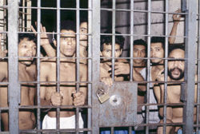
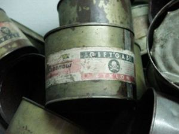
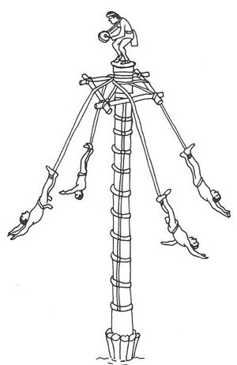

Colegio
 De: La Frikipedia, la enciclopedia extremadamente seria.
De: La Frikipedia, la enciclopedia extremadamente seria.
Los "Centros de Reclusión para Menores" o comunmente llamados "Colegios", son lugares amplios y luminosos, de cuartos repletos de máquinas de tortura medievales utileria escolar-que curiosamente tienen como lugar de estacionamiento ciudades repletas de niños o hobbits - En estos antros de rutina edificios (mayormente) se diferencian varias partes, secciones, personajes y demás elementos a citar. También de las las siglas (cárcel obligatoria llena de exámenes)cole.
En clase
Esta es la parte mas aburrida y algo divertida de todas. Los chicos hablan en clases, comen y toman mientras la maestra o el profe explica una materia, dibujan su apodo gastando las hojas, y con el celular debajo del banco. Lo más aburrido es esperar a que llegue el recreo, lo único que todos quieren es que llegue el recreo.
Etimología
Aunque atentado contra la humanidad, se cree que la actual palabra "colegio" proviene del gñapés "gñap" significando así, aunque confusamente: "tocada de cojones durante aproximadamente 11 años, 200 dias al año, 8 horas por día.".
 Felices alumnos en su salon durante un día de lecciones de Matemáticas
Utilidades
«¡Mwahahahahahaha!»
~ Yo al tratar de hacer un sarcasmo y llenar ésta página de citas,
El Colegio a día de hoy tiene varias utilidades (está bien, dejemos el sarcasmo del lado)meramente sociales y casi nulas en el sentido educativo (para mayor información véase: nerd)
- Utilidad 1: Según las palabras del mismísimo ministerio de educación:

|
Los actuales centros educativos sirven, principalmente, a formar la mente de los jóvenes seres humanos que ingresen en ella, pues, en épocas competitivas como éstas, es altamente necesario formar una solida imagen de morales y valores éticos, pues nuestro mundo está cayendo en una decadencia por los problemas de las personas que... (blablablabla, véase: aburrimiento)
|

|
| El ministerio de Educación sobre los Colegios
|
Analizando, con un agudísimo sentido de vista neutral y también de utilidad objetiva, se dijo:
«¿Que carajo dicen?»
~ Todo el mundo sobre la cita anterior
Nosotros, los frikipedistas, analizamos ésta profunda y filosófica frase para quitarle los matices culturales filosóficos, políticos y socio-culturales a éste tan conmovedor texto, resumido tenemos:
«¿Que carájo dicen?»
~ Nosotros sobre la cita de Todo el mundo
Es preciso hacer un claro énfasis en la abismal diferencia entre ambos textos, pues en el ultimo se puede ver, desmitificado, y desenvuelto, el impacto social que en esas palabras recae. Sin mas que aumentar, pasemos a la siguiente utilidad
- Utilidad 2: Como se puede ver en el articulo adolescente, la etapa del colegio abarca la mayoria de tiempo en esta, por lo cual deducimos las siguientes utilidades:
- Aprender a esnífarsela
- (Hecho aplicable a hombres) intensificar el potencial imaginativo al momento de las pajas con la imagen de tus compañeritas mas guarras en la mente.
- Conocer tu verdadera clase social (EMO, friki, y si te gustan los animes otaku)
- ¿Mencione esnifársela?
- (Hecho aplicable a mujeres) Cuchichear hasta formar poderosos músculos en los labios y en la cara, aprender a maquillarse, cubriendo asi su primera cara con la nueva que acostumbraran llevar toda su vida (incluso en hogar)
- Psst, ¿creo que no dije esnifarsela?
Como podeis ver, cualquiera menos aprender, ya que lo que enseñan no vale para una putísima mierda.
- Matemáticas: Para que queremos aprender sumar multiplicar, dividir...si ya lo hacen las calculadoras?
- Francés: Para que cojones quiero aprender francés, si nunca voy a ir a Francia?
- Inglés: Vale, esta sirve para algo.
- Lengua: De que coño me sirve en la vida saber cual es el jodido sujeto de una oracion?
- Educación física: Tendría alguna utilidad si no nos torturaran tanto que todo el mundo lo odia.
- Filosofia: Para que demonios necesitamos memorisar y aprender ideas de unos viejos barbudos que vivieron en Grecia hace 3.000 años (El colegio sirve para que bestias ignorantes como vos aprendan a escribir "memorizar" correctamente, NEGRO.)
- Dibujo: Puede que también sirva para arquitectos, pero es un coñazo.
- Religión: todos sabemos que es el Monstruo de Espagueti V
iolador
- Alemán: es en serio?!
- Historia: A mi que coño me importa lo que le paso a un tío que no conozco de nada hace 1000 años?
- Física y química: Una puta tortura continua
- Biología: Sirve para medicos, pero también es un coñazo.
- Recreo: ¡Aleluya!
- Comedor: De donde recogen toda esa basura?
- Salida: Libertad! Huye! Y si tienes la oportunidad escapa a otra ciudad, país, o mejor planeta.
Y que dicen los estudiantes de esto?
« Auxilio »
~ los estudiantes en el recreo, en el único momento donde se alimentan (de pan y agua)
Esta cita, fue sacada de una encuesta que se hizo, el 100% de los muchachos, dijeron "auxilio", el otro 100% dijo "matenme", y el otro 100% dijo "¿Qué acaso no nos tienen compasión?".
Con esto se puede sacar la conclusión de que la escuela es un lugar donde nos forjamos como seres humanos y nos preparamos para el futuro se conjunta el odio de los muchachos, aun mas que a George Bush, Osama Bin Laden, y Los Teletubbies juntos.
Tipos de Colegio
 Comida diaria en los colegios con cafetines e incluso principal producto en los quioscos
Como lugar (físico)
El colegio, como lugar físico, se lo puede tipologar de muchas maneras, dependiendo a su coste, a su diseño , al numero de guarras que haya en ella, etc.
- Colegios con mesas y sillas: Los colegios mas comunes a lo largo del mundo (menos africa), se caracterizan por justamente eso, tener mesas y sillas.
- Colegios con mesas, sillas y alumnos: Una variante modesta de la anterior, es igual a la primera, solo que ademas de eso, posee algunos alumnos.
- Colegios pijos: Colegios caros, de corte neoclásico-grecorromano-oriental, con lavabos de oro (enchapado de oro), generalmente suelen ser de enseñanza absurdamente pobre, y con una cafeteria, para contrastar, enormemente bien provista (pero muy cara(culeros).
- Colegios raros: Observen la analogía y lo entenderán todo (articulo principal: XD) es como una Frikipedia sin faltas de ortografía.
- Colegios católicos:Estos se caracterizan por tener crucifijos hasta en el vater y una iglesia medio destruida en las cercanías.Los profesores se caracterizan por su
homosexualidad religiosidad.
- Colegios pobres:Se caracterizan por estar ubicados en algún pueblecito, no tienen ni mesas ni sillas, lo que si tienen es jóvenes con ganas de aprender, ah , tampoco tienen maestro, suelen localizarse mayormente en mexico y ecuador
- Colegios de pueblo Suelen estar en un pueblo pequeño donde su población goze con tan solo 30 habitantes o algo mas.Solo hay 1 colegio, un maestro para 4 clases.Los niños no estudian, hablan entre ellos y si sacan buenas notas se comportan como "Estudiosos"
Dependiendo de su método de enseñanza
«¿Enseñanza?»
~ Tú al pensar en un sarcasmo.
Dependiendo del método de enseñanza, el colegio se divide en:
- Colegio sin Monjas: Este tipo de colegio se caracteriza por alumnos mas expresivos, con mas libertad y sin moratones, los colegios sin monjas cambian en dos asignaturas: Religión e Historia de España.
- Colegio con Monjas: Estos colegios son especiales, pues la subespecie humana de las "Monjas" gozan de un sexto sentido que huele cuando alguien no ha hecho la comunión y así ponerle un 4 en el examen de "Historia de España" en vez de un 5. En estos colegios los alumnos se mantienen mas despiertos luego en casa, pues tienen una magnífica hora para dormir: La Eucaristía.
Componentes del Colegio
En el Colegio hay tres subespecies destacadas:
- Profesores: Son unas criaturas monoencefálicas con ganas de imponer su sabiduría, aunque esta en ocasión sea errónea, los profesores opinan de los alumnos que son sus conejillos de Indias, estos se dividían en Religiosos o No. (ver colegios con o sin Monjas).
- Prefectos:Ellos suelen ser aun mas malvados que los profesores, la única diferencia, es que ellos no lo hacen para educar,ellos lo disfrutan,quitandote tu play portable, o incluso tus calzones
con premio.
- Alumnos: Son los sometidos a la ira del profesor y se someten a exámenes, pruebas, salidas de excursión y otras múltiples torturas incitables.
- Criaturas Merodeadoras: Son unas criaturas extrañísimas que solo habitan en los colegios, hay muchas especies, como la señora dueña de objetos perdidos (Señora anciana de pelo dorado teñido, con sonotone y dientes torcidos), el jardinero (criatura que corta el césped con una malévola sonrisa), La conserje {criatura malévola que te pone (obliga) a hacer su trabajo (no se sabe por que razón existen)}...
- Jefe de estudios: Es es típico profesor gruñón que por un motivo siempre a de estar en los pasillos gritando, poniendo partes a diestro y siniestro. También su mas importante labor estar pegado al director /su santidad/ como este le llamar. Siempre este pelota esta de acuerdo con lo que dice el dictador.Lo que hace habitualmente por el recreo es estar con su cafelito hablando de como torturar a los alumnos con los demás profesores.
- Director: Son lo k mandan en el colegio, siempre son ellos los k cojen el primer café, se pasa del día sentao en el despacho con el aire acondicionao, usan a los jefes de estudio como sus sirvientes personales, se rumorea que siempre están arreglando papeleo pero es una trola siempre esta en el despacho jugando a la play y viendo el futbol en la tele de plasma que esconde cuando viene algún profe.
El Recreo
 Clasico ejercicio en la clase de gimnasia
En el recreo ( o jungla infantil) se pueden observar diferentes cosas raras.
- Esta el desorientado que camina por todos lados. va buitreando de mesa en mesa viendo q le pueden "convidar"
- Esta el cheto que compra la cantina entera. Casi siempre se lo ve acompañado de un desorientado con hambre.
- Se encuentra también el profesor q va gritando por todos lados. putiando al alumno que se le cruce.
- Esta el puteado que siempre sale puteando por que un profesor lo puteo.
- La cantinera. Que cuando ve que tienes mucha plata te ofrece la cantina entera aunque medio colegio este formando fila.
- El muerto de hambre que se desmaya formando fila en la cantina.
- Los varones. Que abusan de las pobres adolescentes en lugares oscuros y bien escondidos.
- El que no tiene plata y te la pide!
pobre
- El
Imbecil amigo que se cae corriendo
- El/la que no puede andar sin su grupito de amig@s
- El némesis. Extraño personaje que solo quiere pelear contigo y solo contigo por causas desconocidas.Nada de al flogguer,al cheto,al maricon de curso para el, ellos no existen. No importa que tenga 7 años mas que ti, el nunca dejara de acecharte o pelear con otro tipo. Normalmente van solos.
- La tipa que te gusta pero nunca te volteara a ver.
- La tipa a la que le gustas y que colecciona tus calzones.
- Emos
- Canis(La cantera)Son los "pequeños" Canis que ya han repetido 4 cursos pero no hay cojones de pasar al instituto aunque lo deseen.Estos buscan pelea aunque no se la des.Ya que como le pegues, si pasas al instituto...Corre!
- El chico gordo al que se le ve comiendo.
- El otro chico gordo al lado de el anterior formando una graciosa formación de dos bolas juntas.
- El típico niño anoréxico y mas blanco que el culo de blancanieves, con los pantalones hasta los sobacos a modo de steve Urkel.
- La típica pija
gilipollas que siempre tiene "amigas" 4ever!!!
- El típico grupo formado por los
subnormales abusones de diversos cursos,que se acercan en formación Alfa-Omega para darte la del pulpo chaval...
- La niña
guarra puta chupawebos exhibicionista a la que siempre se le ven las bragas u otras cosas
- La victima friki y empollona.
- Lo sentimos, pero tu perteneces al grupo de normalitos.
Después del recreo, la etapa antes de salir de clases.
Una vez que termina el recreo, el alumno es sometido llamado a su clase por medio de un timbre destroza tímpanos, obligandolos a volver al salon, y recordandoles que estan en el mismisimo infierno, al parecer una vez que regresan del receso, los maestros regeneran sus niveles de maldad y energia, siendo aun mas malvados que al inicio del dia y aplicando torturas sexuales que jamas imaginarias (alguien dijo algebra?)
Despues del receso como los putos maestros quieren dejar a sus alumnos con un gran
sindrome de locura, ellos dejan un antiguo rito que solo los de el pueblo ese de
salem los sabian y era dejar tarea, chachachan!!!!
Autor(es):
- Fordus
- Aque
- Khazike Khashondo
- Xisas
- Zirkon
- Bahamutzero
- Tlozfn
- Sckumon
- Darkman abed
- Cibercrank
Frikipedia 2005-2016, Licencia
GFDL 1.2 - Extraído por FrikiLeaks